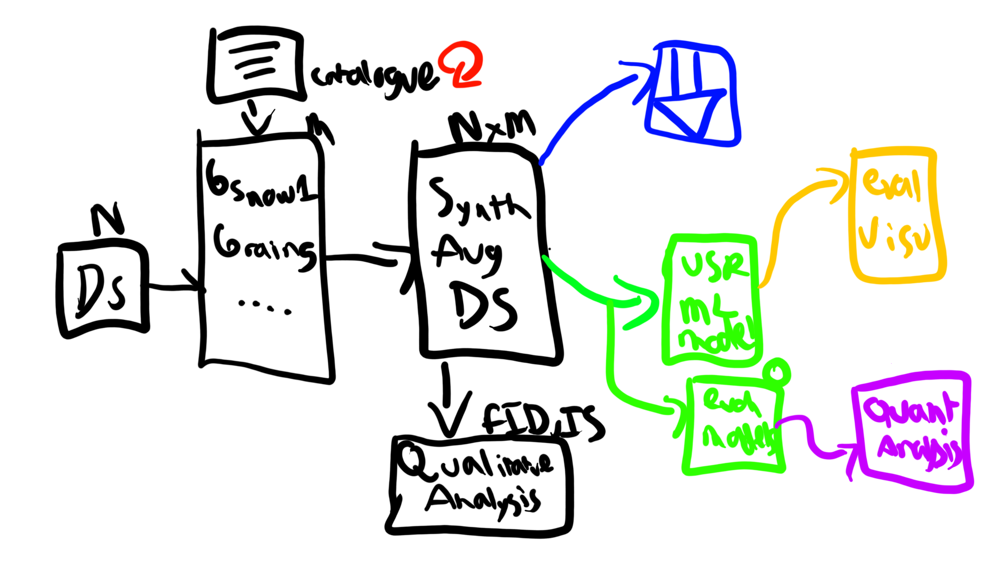
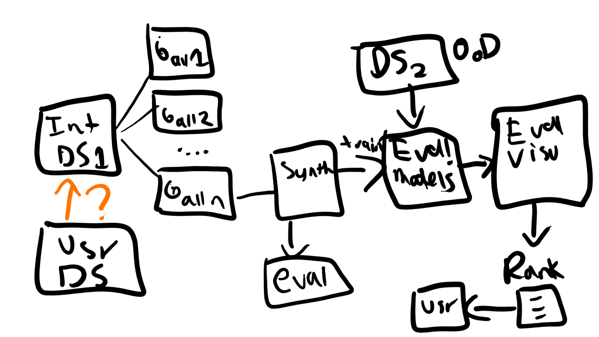

Stackable Plug & Play Generative Model Architecture
Stackable Plug & Play Generative Model Architecture#
The principal idea from Musat et al of using a modular weather-stacking for synthetic data generation is quite useful and shows promise. The results from their publication appear to show that the total mix of all adverse weather combination is the best performing, nevertheless there can be potential scenarios when a limited subset is of use, or when only specific conditions are necessary in specific regions. Thus a flexible architecture that can be mix-and-matched can have potential and is worth exploring. Argus aims to use this idea as a central building block of a validation architecture for ML models.
A rough diagram of the desired flow architecture is as follows:
{kind=link}
The flow architecture is composed of the following components:
User provided datasets (either for augmentation or for validation)
A stack of possible GAN-based generative models that can be mixed together (per Musat et al) to generate synthetic data. These models are already evaluated and validated in a catalogue and the client can select the ones that are useful for their use case based on the results (transparency). They are constantly updated and evaluated by the Argus team.
The dataset is synthetically augmented with the chosen generative stack (or the default one). Qualitative evaluation is performed so the client can trust the generated images will be real-like
The user can download the synth data for train dataset augmentation, or their custom ML model can be evaluated with the given synthetically augmented dataset. The results are provided to the user and visualizations follow to raise critical points & issues and make it very clear where the model is performing correctly and where it isn’t.
At the same time, the synthetic images are also evaluated with the internal evaluation models to analyze the performance of the generative models and refine them if necessary.
For the internal team the desired flow architecture is shown below:
{kind=link}
The main benefits of this approach are:
Versatility: Enabling the use of multiple stacked weather conditions increases the potential dimensionality of the synthetic data that can be generated. This then allows the client to generate synthetic data for testing in wider range of use cases, or potentially larger training dataset.
Validation Robustness: By using a modular approach, we can ensure that the generative model can generalize well to the different weather conditions that are expected in the real world. This then allows validation of the desired ML model in multiple adverse weather conditions and gauge if it can how well it can possibly generalize in the real world.
Cost-efficiency: By learning an efficient mapping of the domain shift the generative approach can generate simulated data from multiple weather conditions in an efficient manner which translates to a lower cost (when compared with phyiscs-based simulation).
Edge case generation: Many adverse weather conditions are complex to observer in the real world, and mixes of them can be even less frequent, as such a system that can potentially stack them and extend previously seen normal weather conditions can be useful for edge case generation that can potentially cause critical errors.
Explainability: The generative approach can be used to generate synthetic data that can be used to explain the model’s behavior in different weather conditions. This can be useful for debugging and understanding the model’s behavior in different conditions.
On the contrary, the challenges that this approach presents are as follows:
Dimensional complexity: When the number of adverse weather conditions, the potential combinations increases proportionally. As the dimensional space increases in size, data will thus be more sparse and harder to obtain. This is a challenge when obtaining the dataset to train the generative models on.
Dataset: To properly evaluate GAN models, balanced and representative datasets must be obtained that closely match the probability distributions of the real world. This can be costly and time consuming. As better generative models are desired, the requirements on the dataset increase to ensure the models can keep on improving.
Training reuse: While generative models that are worthwhile can be used multiple times to generate synthetic data for multiple datasets, the training process is still costly and time consuming. Continuous development of multiple generative models can thus be costly particularly if specific combinations are not used frequently. Thus care needs to be taken to evaluate the tradeoffs between flexibility and usefulness.